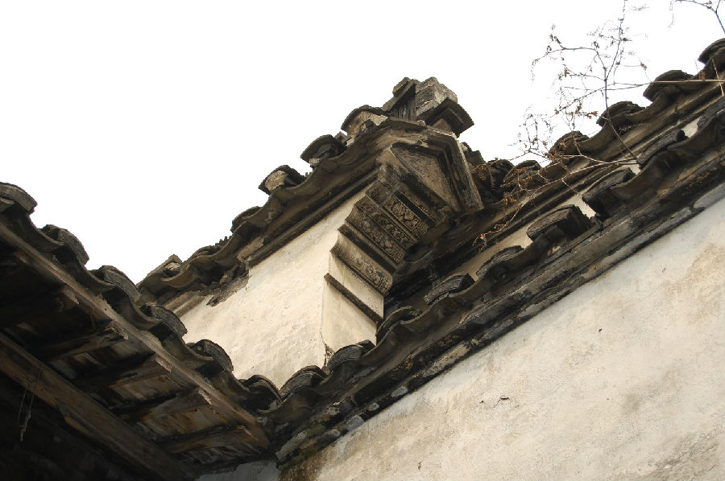
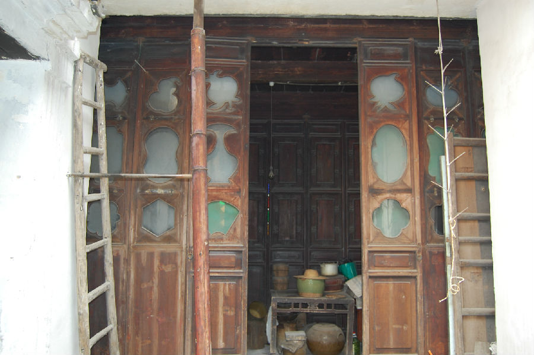

嘉兴市文物保护网 · 市级文物保护点 · 2020-11-06 · 原文


火弄张氏老宅位于嘉兴市秀洲区王店镇梅溪社区梅溪街火弄20号。据建筑形制和所有人介绍判断，建于清光绪年间。坐北朝南，原有四进，现存三进和二天井，占地面积191平方米，通面阔6米，一进二层九檩，进深3.15米。南面中央有砖雕门楼，二进二层，进深6.65米、还有一后院进深7.08米。屋顶为硬山顶，四周有风火墙，马头墙上绘有清供壁画。砖木结构，抬梁与穿枋式并用，五檩。屋内木结构及门窗雕刻为民国风格，格扇窗用彩玻璃装饰。该房屋虽布局不完整，但目前尚存的房屋较牢固，规模较大，梁架用料较粗大，具备典型的江南民居的风格，具有较高的历史和艺术价值。2010年公布为嘉兴市文物保护点。